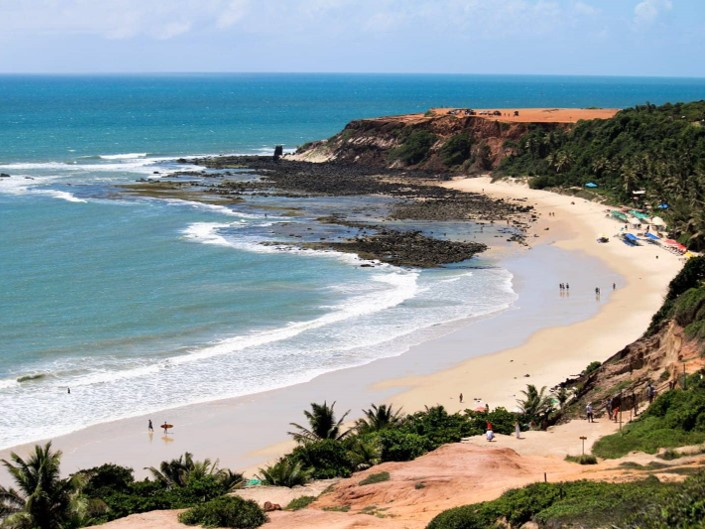
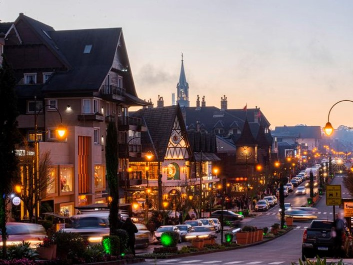
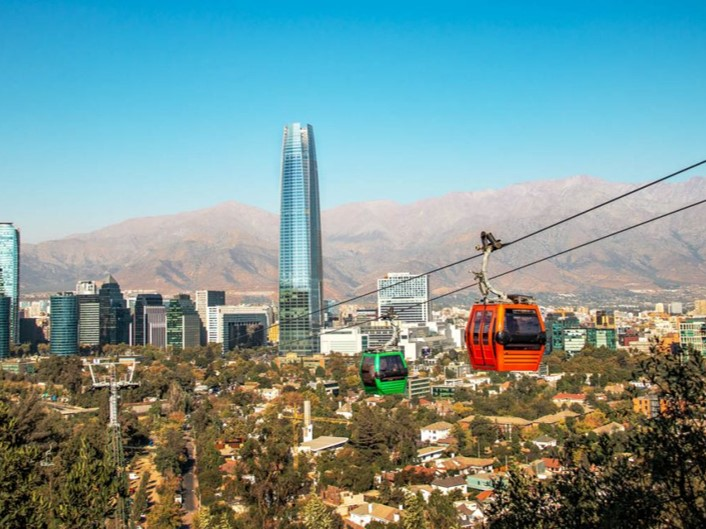

Interest
Traveling
Traveling and exploring new places is one of my greatest interests. I find immense value in visiting new destinations, learning about how people live, and understanding their unique cultures and lifestyles.
Urban locations with vibrant energy provide a fascinating glimpse into city life, while destinations known for their natural beauty offer moments of tranquility and breathtaking landscapes.
Below are photos showcasing some of the incredible places I've had the opportunity to visit that truly amazed me:

Pipa, Brazil

Gramado, Brazil

New York, USA

Cinque Terre, Italy

Santiago, Chile

St. Moritz, Switzerland
Future Travel Plans
There are still many destinations that I would like to visit in the future, and here is a list of just a few:
- Reykjavík, Iceland
- Lima, Peru
- Lençóis Maranhenses, Brazil
- Seoul, South Korea
- Bali, Indonesia
- London, England